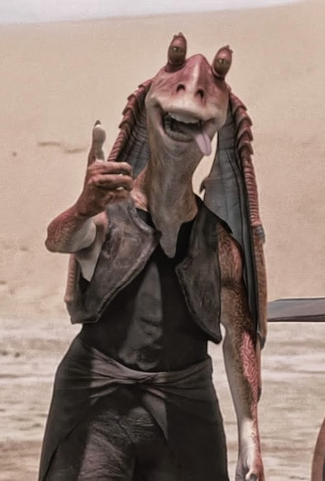

Originalmente un esclavo en Tatooine, demuestra ser excepcionalmente sensible a la Fuerza. Es entrenado como Jedi por Obi-Wan Kenobi, pero su miedo a perder a sus seres queridos y su ambición lo llevaran al lado oscuro.
Personajes


Jar Jar Binks es un gungan de Naboo, conocido por su personalidad torpe pero bien intencionada. Jugó un papel inesperado en la política galáctica al representar a su pueblo en el Senado.
Darth Maul fue un guerrero Sith feroz y ágil, aprendiz de Darth Sidious, conocido por su apariencia intimidante y su sable de doble hoja.

Obi-Wan Kenobi fue un sabio y valiente Maestro Jedi, conocido por entrenar a Anakin Skywalker y por su papel crucial en la defensa de la República durante las Guerras Clon.
Padmé Amidala fue una líder valiente y diplomática, reina y luego senadora de Naboo, conocida por su compromiso con la paz y la justicia en la República Galáctica.
Qui-Gon Jinn fue un Maestro Jedi sabio y poco convencional, conocido por seguir la voluntad de la Fuerza incluso por encima del Consejo Jedi. Descubrió a Anakin Skywalker y creyó en su destino especial.